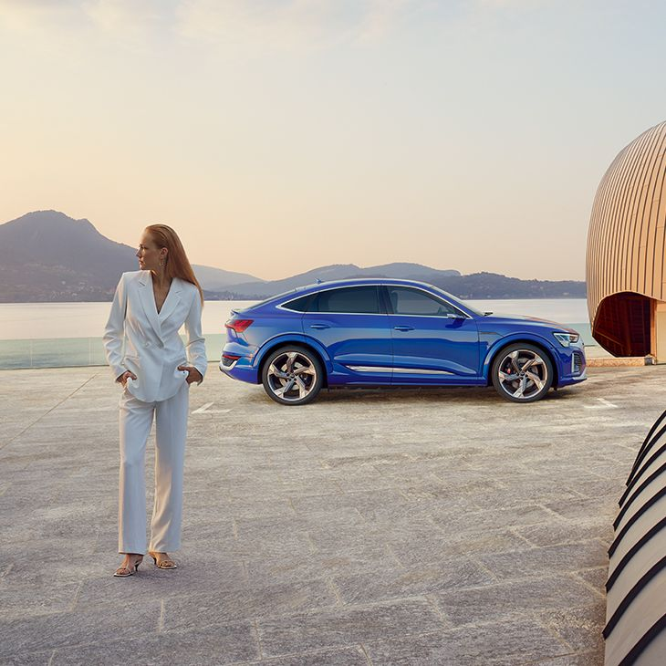

Audi Summit for Progress 2023
Presentado por la periodista Mónica Carrillo, el Palacio de Cibeles
vivirá una jornada histórica el 25 de octubre en un evento al que solo
podrán acudir 300 personas. Con ponentes del prestigio del líder
empresarial Paul Polman o ingenieros y arquitectos de la talla de Ties
Van Der Hoeven, Kongjian Yu y Kunlé Adeyemi, Audi Summit for Progress
es el evento del año.
